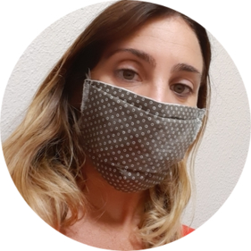

CONTACT
my name
Nina Roma
my email
nom@email.com
site web
www.name.com
skipe address
@nome_dutilizator

my name
Nina Roma
my email
nom@email.com
site web
www.name.com
skipe address
@nome_dutilizator
je m'appelle Nina Roma, je viens de terminer ma formation web effectuee avec grand bonheur et succes intitulee developpeur web devenant a la fin de cette formation en ligne sur openclassroom, le fameux site de formations en ligne, devenant une developpeuse junior web free lance de renom. Ma clientele achete mes services sachant que je suis a la hauteur ayant reçu ce don dans ce domaine du developpement web. Ex maitre de rang dans le secteur de la restauration jai le gout du travail bien fait et des resultats hauts de gamme: j'aime la plus haute marche du podium et je suis performante dans tout ce que j'entreprends surtout lorsqu'il s'agit de travail d'equipe. Vous pouvez faire confiance en mon savoir-faire dû a mes competences fraichement acquises mais puissantes et a mon experience car j'ai construit de nombreux sites web pour tous mes clients: mon propre CV temoigne de mes capacites.
developpeuse web freelance
je suis desormais developpeuse web junior free lance, ex chef de rang tout ce qui est au top m'attire. Je viens d'Australie je parle donc anglais courament et italien etant italienne, j'excelle dans le travail d'equipe et dans le developpement web.
CRISTIANO RONALDO
director
tel: 00777999
EROS RAMAZZOTTI
manager
tel: 74683544